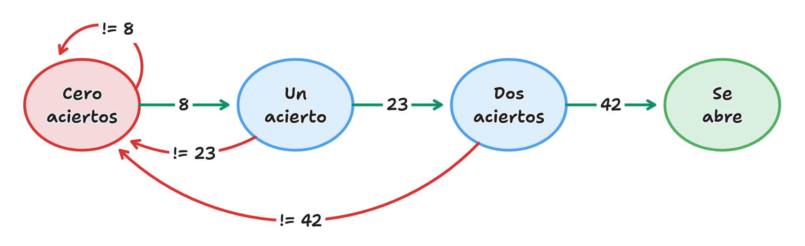

Práctica 3
Composición iterativa
1 La caja fuerte del West Bank
Las cajas fuertes de dial (o de combinación) son un tipo de caja fuerte que se abre mediante la introducción de una secuencia de números. La caja fuerte del West Bank se abre introduciendo tres números secretos (8, 23, 42).
- Si se acierta un número:
- La caja emitirá un chasquido (tick),
- y se podrá introducir el siguiente número.
- Si se falla en alguno:
- La caja se reinicia emitiendo un sonido (clonk),
- y tendrás que volver a empezar con el primer número.
- Si se aciertan los tres números seguidos, sin fallos:
- La caja fuerte se abrirá.
- Mensaje:
<se abre>
- El usuario puede rendirse en cualquier momento introduciendo un
0.
<frente a la caja fuerte>
8
tick
23
tick
42
tick
<se abre>
<frente a la caja fuerte>
8
tick
1
clonk
8
tick
23
tick
42
tick
<se abre>
<frente a la caja fuerte>
1
clonk
2
clonk
0
<se aleja caminando>
Diagrama de estados

Entrega: Escribe tu programa en un fichero denominado westbank.py.
2 Serie de Leibniz
En matemáticas, la serie de Leibniz es una serie infinita que sirve para calcular el número \(\pi\) de forma aproximada.
\[ \sum_{n=0}^{\infty}\frac{(-1)^{n}}{2n+1}= 1 - \frac{1}{3} + \frac{1}{5} -\frac{1}{7} + \frac{1}{9} -\cdots = \frac{\pi}{4} \]
Escribe un programa Python que calcule una aproximación de \(\pi\) mediante la serie de Leibniz. El programa ha de solicitar al usuario un número entero positivo n y calcular la suma de los n primeros términos de la serie de Leibniz. Finalmente, calculará y mostrará: el valor aproximado, el valor real (puedes usar el valor de math.pi) y el error entre ellos.
10
Valor aproximado: 3.0418396189294032
Valor real: 3.141592653589793
Error: 0.09975303466038987
100
Valor aproximado: 3.1315929035585537
Valor real: 3.141592653589793
Error: 0.00999975003123943
Entrega: Escribe tu programa en un fichero denominado leibniz.py.
3 Mano fuerte, mano débil
En el juego de “Mano fuerte, mano débil” se enfrentan dos jugadores. Cada uno recibe dos cartas de una baraja de poker. El valor de cada carta viene dado por la siguiente tabla:
| 2-10 | J | Q | K | A |
|---|---|---|---|---|
| 2-10 | 11 | 12 | 13 | 14 |
Una mano gana a otra si ambas cartas son superiores a las del rival (no importa la posición de la carta)
14, 3gana a2, 13(porque14>13y3>2)14, 3gana a13, 2(porque14>13y3>2)14, 2empata con3, 3(porque14>3y2<3)8, 4pierde con14, 8(porque8>4y14>8)8, 4empata con8, 8(porque4<8y8=8)Esto genera varias reglas implícitas:
- Sacar un 14 (as) garantiza victoria o empate. (Ninguna mano puede ganarte porque, como mínimo, empatas).
- Sacar un 2 (carta más baja) garantiza cero victorias. (Cualquier mano te gana o empata).
La siguiente tabla ilustra todas las combinaciones posibles para la mano 8, 10.
| 2 | 3 | 4 | 5 | 6 | 7 | 8 | 9 | T | J | Q | K | A | |
|---|---|---|---|---|---|---|---|---|---|---|---|---|---|
| 2 | o | o | o | o | o | o | o | o | |||||
| 3 | o | o | o | o | o | o | o | o | |||||
| 4 | o | o | o | o | o | o | o | o | |||||
| 5 | o | o | o | o | o | o | o | o | |||||
| 6 | o | o | o | o | o | o | o | o | |||||
| 7 | o | o | o | o | o | o | o | o | |||||
| 8 | o | o | o | o | o | o | |||||||
| 9 | o | o | o | o | o | o | x | x | x | x | |||
| T | x | x | x | x | |||||||||
| J | x | x | x | x | x | x | |||||||
| Q | x | x | x | x | x | x | |||||||
| K | x | x | x | x | x | x | |||||||
| A | x | x | x | x | x | x |
Escribe un programa Python que, dada una mano de un jugador (introducidas como los dos puntos de cada carta), calcule cuantas combinaciones ganan, cuantas empatan y cuantas pierden. NO has de tener en cuenta las probabilidades de que salga una carta, sólo contar cuantas combinaciones ganan, empatan o pierden.
14
Introduce la segunda carta:
14
Victorias: 144
Empates: 25
Derrotas: 0
8
Introduce la segunda carta:
10
Victorias: 60
Empates: 77
Derrotas: 32
Entrega: Escribe tu programa en un fichero denominado manofuerte.py.
4 Mano fuerte, mano débil (II)
Partiendo del ejercicio anterior (crea una copia del ejercicio una vez lo hayas acabado), extiende el funcionamiento del mismo añadiendo la representación de la tabla de casos. En dicha tabla:
oindica que tu mano gana.xindica que tu mano pierde..indica que tu mano empata.
Tip: Recuerda lo aprendido en el ejercicio Dibujar tablas de multiplicar
Introduce la primera carta: 8 Introduce la segunda carta: 10 | 2 | 3 | 4 | 5 | 6 | 7 | 8 | 9 | 10 | 11 | 12 | 13 | 14 | 2 | o | o | o | o | o | o | o | o | . | . | . | . | . | 3 | o | o | o | o | o | o | o | o | . | . | . | . | . | 4 | o | o | o | o | o | o | o | o | . | . | . | . | . | 5 | o | o | o | o | o | o | o | o | . | . | . | . | . | 6 | o | o | o | o | o | o | o | o | . | . | . | . | . | 7 | o | o | o | o | o | o | o | o | . | . | . | . | . | 8 | o | o | o | o | o | o | . | . | . | . | . | . | . | 9 | o | o | o | o | o | o | . | . | . | x | x | x | x | 10 | . | . | . | . | . | . | . | . | . | x | x | x | x | 11 | . | . | . | . | . | . | . | x | x | x | x | x | x | 12 | . | . | . | . | . | . | . | x | x | x | x | x | x | 13 | . | . | . | . | . | . | . | x | x | x | x | x | x | 14 | . | . | . | . | . | . | . | x | x | x | x | x | x | Victorias: 60 Empates: 77 Derrotas: 32
Entrega: Escribe tu programa en un fichero denominado manofuerte2.py.
5 Entrega de la práctica
Antes del 15 de marzo a las 18:00, deberán haberse subido a Moodle los siguientes ficheros: